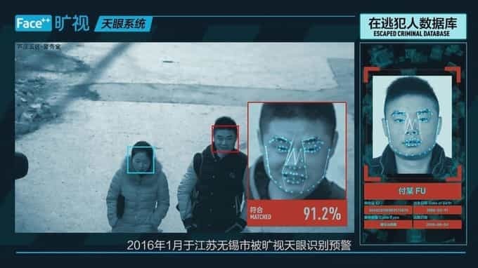
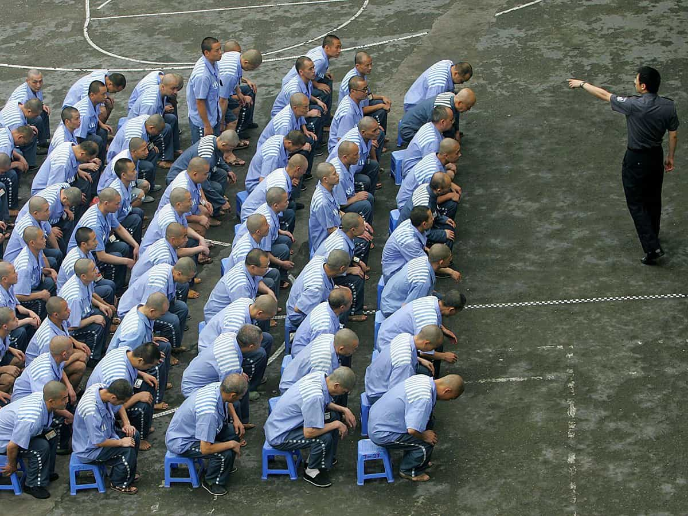
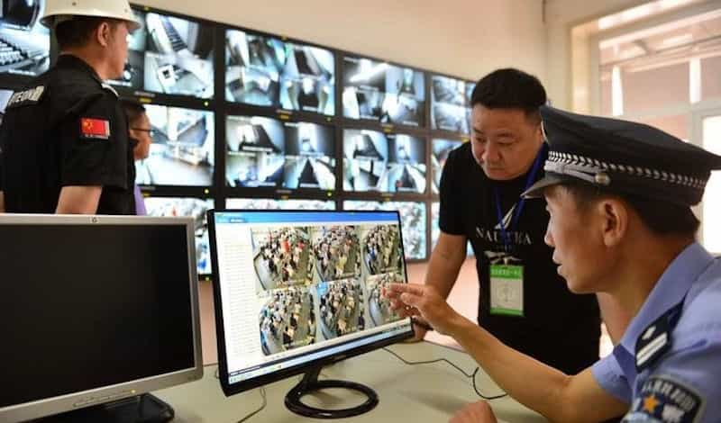

Nobody knows what happened to the Uighur student after he returned to China from Egypt and was taken away by police.
Not his village neighbors in China’s far west, who haven’t seen him in months. Not his former classmates, who fear Chinese authorities beat him to death.
Not his mother, who lives in a two-story house at the far end of a country road, alone behind walls bleached by the desert sun. She opened the door one afternoon for an unexpected visit by Associated Press reporters, who showed her a picture of a handsome young man posing in a park, one arm in the wind.
“Yes, that’s him,” she said as tears began streaming down her face. “This is the first time I’ve heard anything of him in seven months. What happened?”
“Is he dead or alive?”

The student’s friends think he joined the thousands — possibly tens of thousands — of people, rights groups and academics estimate, who have been spirited without trial into secretive detention camps for alleged political crimes that range from having extremist thoughts to merely traveling or studying abroad. The mass disappearances, beginning the past year, are part of a sweeping effort by Chinese authorities to use detentions and data-driven surveillance to impose a digital police state in the region of Xinjiang and over its Uighurs, a 10-million strong, Turkic-speaking Muslim minority that China says has been influenced by Islamic extremism.
Along with the detention camps, unprecedented levels of police blanket Xinjiang’s streets. Cutting-edge digital surveillance systems track where Uighurs go, what they read, who they talk to and what they say. And under an opaque system that treats practically all Uighurs as potential terror suspects, Uighurs who contact family abroad risk questioning or detention.
The campaign has been led by Chen Quanguo, a Chinese Communist Party official, who was promoted in 2016 to head Xinjiang after subduing another restive region — Tibet. Chen vowed to hunt down Uighur separatists blamed for attacks that have left hundreds dead, saying authorities would “bury terrorists in the ocean of the people’s war and make them tremble.”
Through rare interviews with Uighurs who recently left China, a review of government procurement contracts and unreported documents, and a trip through southern Xinjiang, the AP pieced together a picture of Chen’s war that’s ostensibly rooting out terror — but instead instilling fear.
Most of the more than a dozen Uighurs interviewed for this story spoke on condition of anonymity for fear that Chinese authorities would punish them or their family members. The AP is withholding the student’s name and other personal information to protect people who fear government retribution.
Chen and the Xinjiang regional government did not respond to repeated requests for comment. But China’s government describes its Xinjiang security policy as a “strike hard” campaign that’s necessary following a series of attacks in 2013 and 2014, including a mass knifing in a train station that killed 33. A Hotan city propaganda official, Bao Changhui, told the AP: “If we don’t do this, it will be like several years ago — hundreds will die.”
China also says the crackdown is only half the picture. It points to decades of heavy economic investment and cultural assimilation programs and measures like preferential college admissions for Uighurs.
Officials say the security is needed now more than ever because Uighur militants have been fighting alongside Islamic extremists in Syria. But Uighur activists and international human rights groups argue that repressive measures are playing into the hands of the likes of al-Qaida, which has put out Uighur-language recruiting videos condemning Chinese oppression.
“So much hate and desire for revenge are building up,” said Rukiye Turdush, a Uighur activist in Canada. “How does terrorism spread? When people have nowhere to run.”
‘Thought Police’

The government has referred to its detention program as “vocational training,” but its main purpose appears to be indoctrination. A memo published online by the Xinjiang human resources office described cities, including Korla, beginning “free, completely closed-off, militarized” training sessions in March that last anywhere from 3 months to 2 years.
Uighurs study “Mandarin, law, ethnic unity, de-radicalization, patriotism” and abide by the “five togethers” — live, do drills, study, eat and sleep together.
In a rare state media report about the centers, a provincial newspaper quoted a farmer who said after weeks of studying inside he could spot the telltale signs of religious extremism by how a person dressed or behaved and also profess the Communist Party’s good deeds. An instructor touted their “gentle, attentive” teaching methods and likened the centers to a boarding school dorm.
But in Korla, the institutions appeared more daunting, at least from the outside. The city had three or four well-known centers with several thousand students combined, said a 48-year-old local resident from the Han ethnic majority. One center the AP visited was, in fact, labeled a jail. Another was downtown on a street sealed off by rifle-toting police. A third center, the local Han resident said, was situated on a nearby military base.
While forced indoctrination has been reported throughout Xinjiang, its reach has been felt far beyond China’s borders.
In April, calls began trickling into a Uighur teacher’s academy in Egypt, vague but insistent. Uighur parents from a few towns were pleading with their sons and daughters to return to China, but they wouldn’t say why.
“The parents kept calling, crying on the phone,” the teacher said.
Chinese authorities had extended the scope of the program to Uighur students abroad. And Egypt, once a sanctuary for Uighurs to study Islam, began deporting scores of Uighurs to China.
Sitting in a restaurant outside Istanbul where many students had fled, four recounted days of panic as they hid from Egyptian and Chinese authorities. One jumped out a window running from police. Another slept in a car for a week. Many hid with Egyptian friends.
“We were mice, and the police were cats,” said a student from Urumqi, Xinjiang’s regional capital.
All who returned were intensely grilled about what they did in Egypt and viewed as potential terror suspects, the students said. Many were believed held in the new indoctrination camps, while some were sentenced to longer prison sentences.
The young man from Korla rarely went out in the two years he spent studying Islam in Egypt. He played some soccer — a beloved sport among Uighurs — but wasn’t particularly athletic or popular.
Instead, he kept to himself in an apartment that he kept fastidiously clean, steeped in his studies at the revered Al Azhar University, the 1,000-year-old seat of learning in Sunni Islam. He freely discussed Quranic verses with his Uighur friends but mostly avoided politics, one friend said. He spoke of one day pursuing a Ph.D. in comparative religion.
“He had big dreams,” said the friend who is now hiding in Turkey to avoid being sent to China. “He wanted to be a religious scholar, which he knew was impossible in China, but he also wanted to stay close to his mother in Korla.”
He was fluent in Arabic and but also in Chinese. When they huddled around a smartphone to watch a Taiwanese tear-jerker about a boy separated from his mother, he would be the one weeping first.
When homesickness got to him, he would tell his friends about how his mother doted on him, and about Korla and the big house he grew up in. And when he gets married, God willing, he would say, he’d start a family in that house, too.
“If my wife doesn’t agree, then we don’t marry,” he declared.
He returned to China when he was called back in 2016 and taken away in February, according to three students and a teacher from Cairo. They say they heard from reliable sources in China — but cannot prove — that he died in detention.
Show Of Force

Southern Xinjiang, the vast desert basin from where many of the students came, is one of the most heavily policed places on earth.
Deep in the desert’s southern rim, the oasis town of Hotan is a microcosm of how Chen, the Xinjiang party boss, has combined fearsome optics with invisible policing.
He has ordered police depots with flashing lights and foot patrols be built every 500 meters (yards)— a total of 1,130, according to the Hotan government. The AP saw cavalcades of more than 40 armored vehicles including full personnel carriers rumble down city boulevards. Police checkpoints on every other block stop cars to check identification and smartphones for religious content.
Shopkeepers in the thronging bazaar don mandatory armored vests and helmets to sell hand-pulled noodles, tailored suits and baby clothes.
Xinjiang’s published budget data from January to August shows public security spending this year is on track to increase 50 percent from 2016 to roughly 45 billion yuan ($6.8 billion) after rising 40 percent a year ago. It’s quadrupled since 2009, a watershed year when a Uighur riot broke out in Xinjiang, leaving nearly 200 members of China’s Han ethnic majority dead, and security began to ratchet up.
Adrian Zenz, a researcher at the European School of Culture and Theology who tracks Chinese public security staffing levels based on its recruiting ads, says Xinjiang is now hiring 40 times more police per capita than populous Guangdong Province.
“Xinjiang has very likely exceeded the level of police density seen in East Germany just before its collapse,” Zenz said. “What we’ve seen in the last 12 to 14 months is unprecedented.”
But much of the policing goes unseen.
To enter the Hotan bazaar, shoppers first pass through metal detectors and then place their national identification cards on a reader while having their face scanned.
The facial scanner is made by China Electronics Technology Group (CETC), a state-owned defense contractor that has spearheaded China’s fast-growing field of predictive policing with Xinjiang as its test bed. The AP found 27 CETC bids for Xinjiang government contracts, including one soliciting a facial recognition system for facilities and centers in Hotan Prefecture.
Hours after visiting the Hotan bazaar, AP reporters were stopped outside a hotel by a police officer who said the public security bureau had been remotely tracking the reporters’ movements.
“There are tens of thousands of cameras here,” said the officer, who gave his name as Tushan. “The moment you took your first step in this city, we knew.”
The government’s tracking efforts have extended to vehicles, genes, and even voices. In February, authorities in Xinjiang’s Bayingol prefecture, which includes Korla, required every car to install GPS trackers for real-time monitoring. And since late last year, Xinjiang authorities have required health checks to collect the population’s DNA samples. In May, a regional police official told the AP that Xinjiang had purchased $8.7 million in DNA scanners — enough to analyze several million samples a year.
In one year, Kashgar Prefecture, which has a population of 4 million, has carried out mandatory checks for practically its entire population, said Yang Yanfeng, deputy director of Kashgar’s propaganda department. She characterized the checkups as a public health success story, not a security measure.
“We take comprehensive blood tests for the good of the people, not just record somebody’s height and weight,” Yang said. “We find out health issues in citizens even they didn’t know about.”
A biometric data collection program appears to have been formalized last year under “Document No. 44,” a regional public security directive to “comprehensively collect three-dimensional portraits, voiceprints, DNA and fingerprints.” The document’s full text remains secret, but the AP found at least three contracts referring to the 2016 directive in recent purchase orders for equipment such as microphones and voice analyzers.
Meiya Pico, a security and surveillance company, has won 11 bids in the last six months alone from local Xinjiang jurisdictions. It won a joint bid with a DNA analysis company for 4 million yuan ($600,000) in Kargilik and has sold software that automatically scans smartphones for “terror-related pictures and videos” to Yarkent.
Meiya and CETC declined comment.